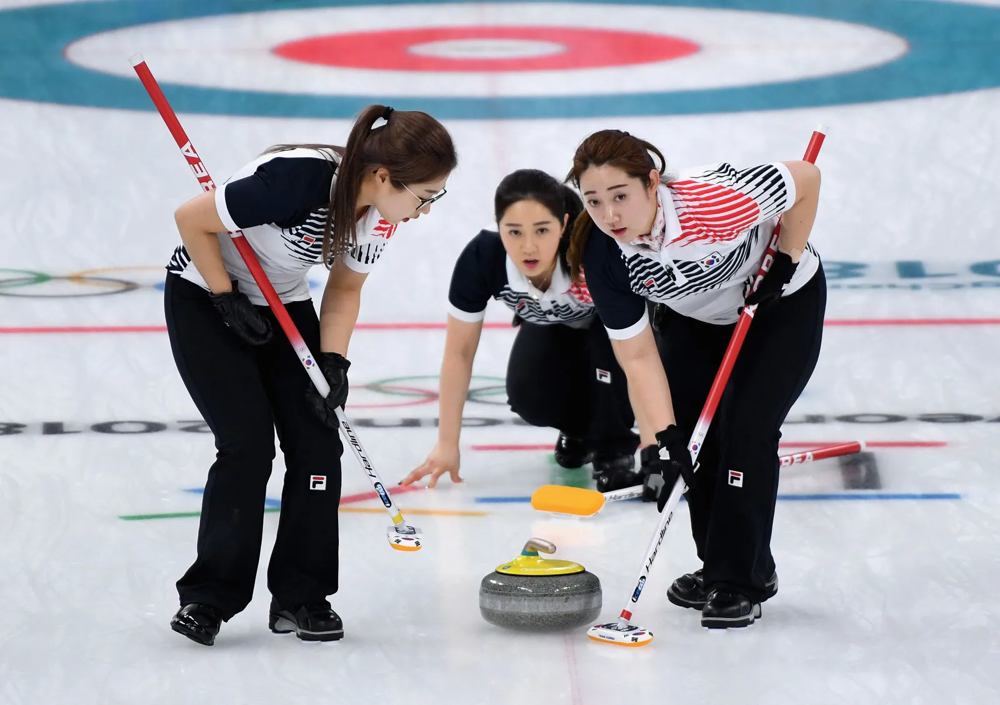
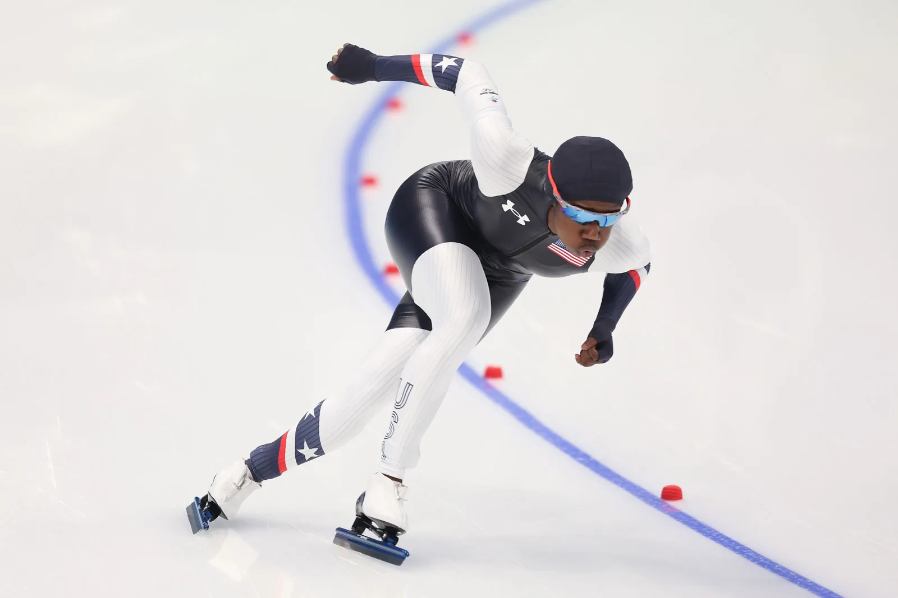

Curling is a sport in which players slide stones on a sheet of ice towards a target area that is segmented into four concentric circles.
It is related to bowls, boules, and shuffleboard. Two teams, each with four players, take turns sliding heavy, polished granite stones, also called rocks, across the ice curling sheet towards the house,
a circular target marked on the ice.Each team has eight stones, with each player throwing two.
The goal is to accumulate the highest score for a game; points are scored for the stones resting closest to the centre of the house at the conclusion of each end,
which is completed when both teams have thrown all of their stones once. A game usually consists of eight or ten ends.
![ Speed skating is a competitive form of ice skating in which the competitors race each other in travelling a certain distance on skates. Types of speed skating are long-track speed skating, short-track speed skating, and marathon speed skating. In the Olympic Games, long-track speed skating is usually referred to as just "speed skating", while short-track speed skating is known as "short track". The International Skating Union, the governing body of competitive ice sports, refers to long track as "speed skating" and short track as "short track skating". Long track speed skating takes place on a 400m ice track, while short track takes place on a 111m track.](winter.webp){kind=link}
![ Curling is a sport in which players slide stones on a sheet of ice towards a target area that is segmented into four concentric circles. It is related to bowls, boules, and shuffleboard. Two teams, each with four players, take turns sliding heavy, polished granite stones, also called rocks, across the ice curling sheet towards the house, a circular target marked on the ice.Each team has eight stones, with each player throwing two. The goal is to accumulate the highest score for a game; points are scored for the stones resting closest to the centre of the house at the conclusion of each end, which is completed when both teams have thrown all of their stones once. A game usually consists of eight or ten ends.](winter02.webp){kind=link}
{kind=link}
{kind=link}